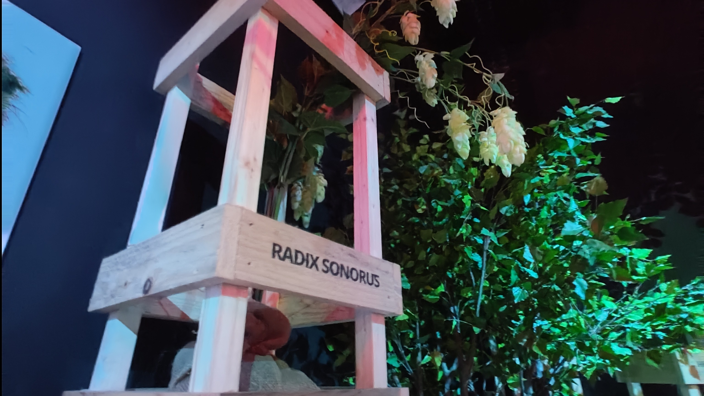
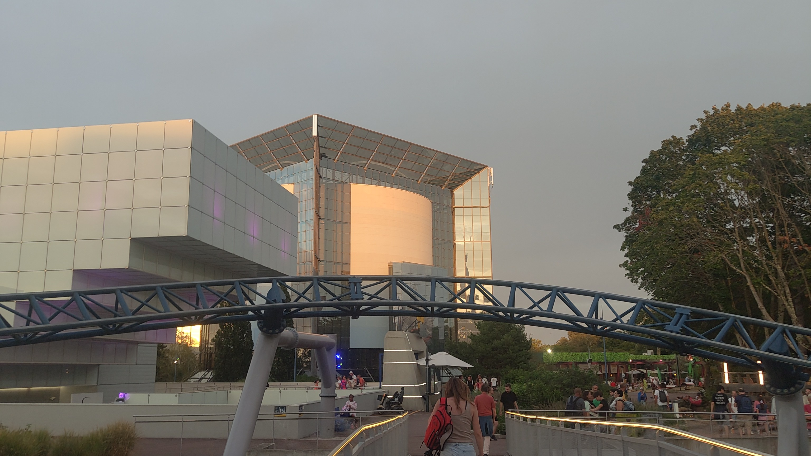
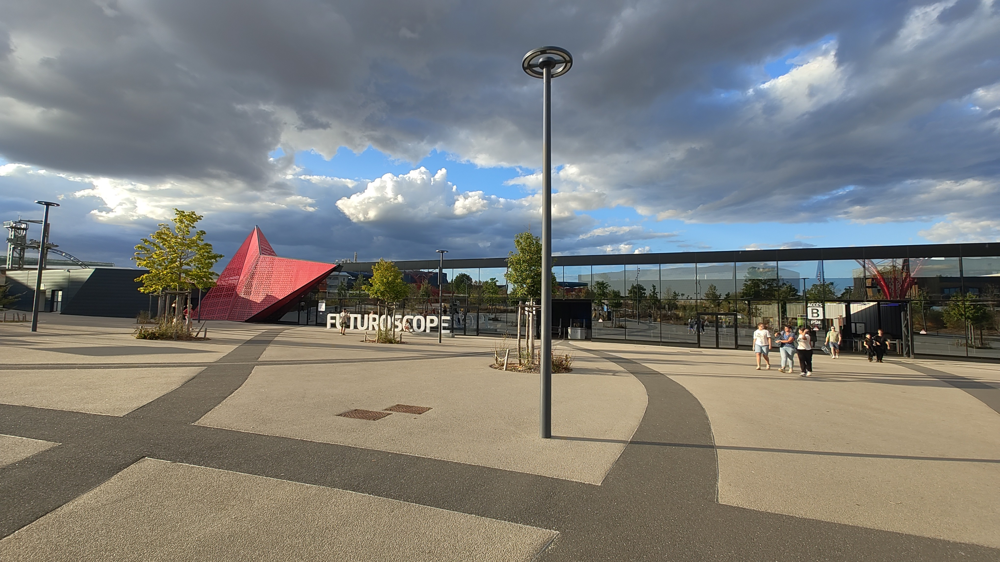
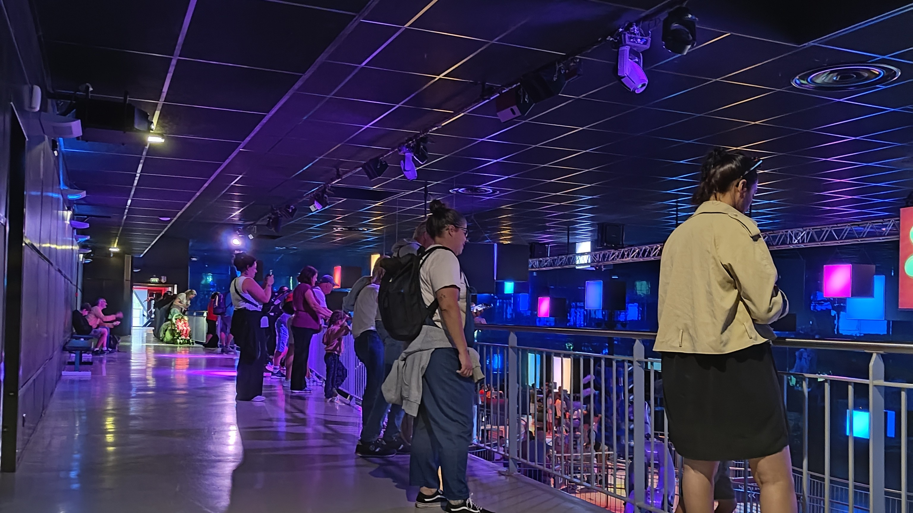

Informatique
Découverte et utilisation des systèmes informatiques et des outils numériques.
PORTFOLIO PERSONNEL
Étudiant en Bac Pro CIEL, passionné par l'informatique, les nouvelles technologies et les projets techniques.
<portfolio>
nom = "Lucas Agneray"
formation =
"Bac Pro CIEL"
passion =
"Informatique"
</portfolio>MA PASSION
Je suis passionné par les parcs d'attractions et particulièrement par tout ce qui se trouve derrière leur fonctionnement.
J'aime découvrir les attractions, observer leur fonctionnement, leur technologie et l'organisation nécessaire pour faire fonctionner un parc.
Cette passion me permet également de m'intéresser davantage aux métiers techniques, à l'électronique, à la maintenance et aux nouvelles technologies.




01 — À PROPOS
Je suis actuellement étudiant en Bac Pro CIEL (Cybersécurité, Informatique et réseaux, Électronique).
Je m'intéresse particulièrement à l'informatique, aux réseaux, aux systèmes et aux nouvelles technologies.
J'aime apprendre par la pratique et réaliser des projets qui me permettent de développer mes compétences techniques.
Bac Pro CIEL
Informatique & réseaux
Développer mes compétences
02 — COMPÉTENCES
Découverte et utilisation des systèmes informatiques et des outils numériques.
Intérêt pour le fonctionnement des réseaux et des infrastructures informatiques.
Création de pages web et découverte du développement front-end.
Curiosité pour les nouvelles technologies et les systèmes techniques.
03 — PROJETS
Retrouvez ici les projets personnels et scolaires que je réalise au cours de ma formation.
Création de mon propre portfolio web afin de présenter mon parcours, mes compétences et mes projets.
Un projet réalisé pendant ma formation sera bientôt présenté ici.
Cette section pourra accueillir une nouvelle réalisation personnelle ou scolaire.
04 — PARCOURS
Lycée Louise Michel — Ruffec
Cybersécurité, Informatique et réseaux, Électronique.
Découverte de différents environnements professionnels et développement de mon expérience sur le terrain.
Continuer à développer mes compétences dans l'informatique et les technologies.
MON CV
Retrouvez mon parcours et mes expériences professionnelles dans mon CV.
05 — CONTACT
Pour une candidature, un stage ou simplement pour échanger, vous pouvez me contacter.